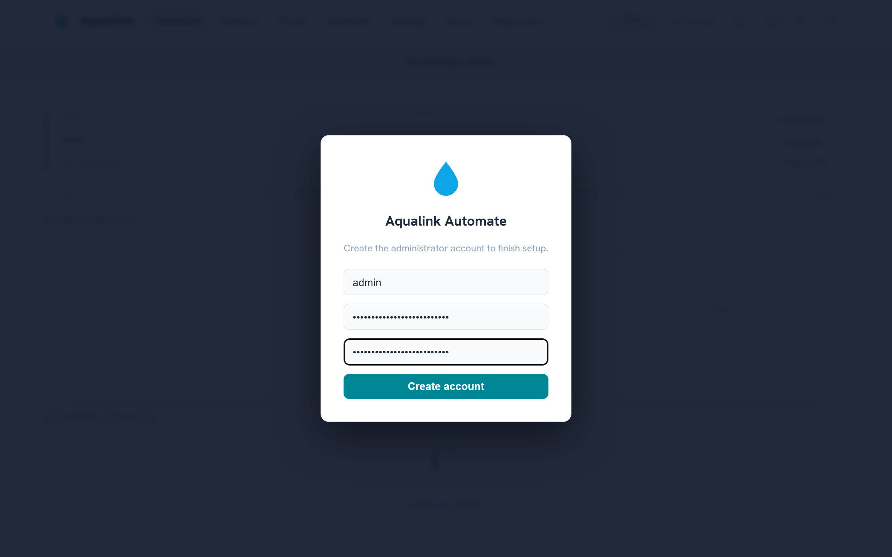
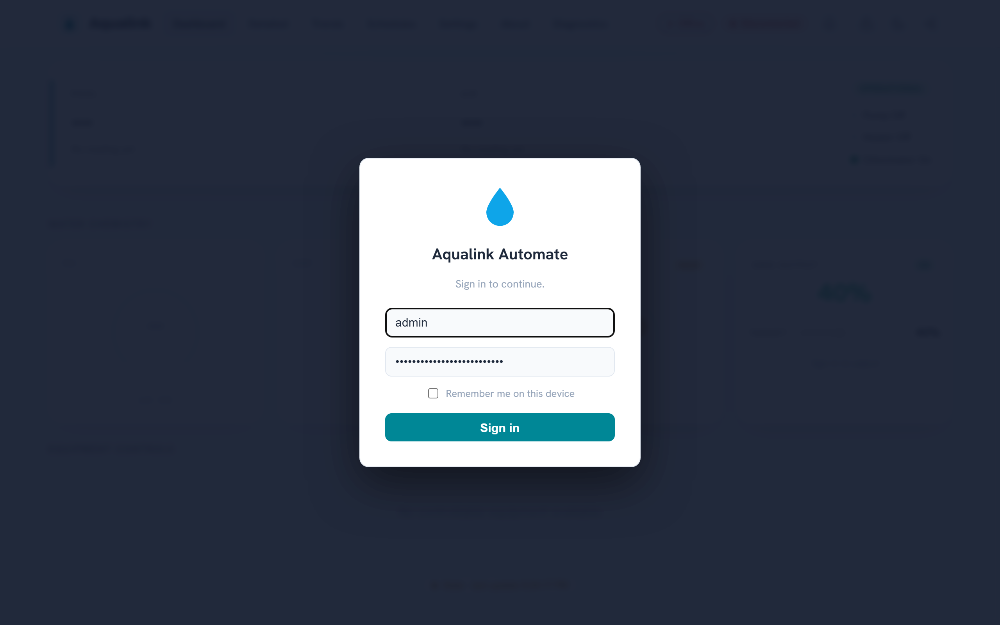
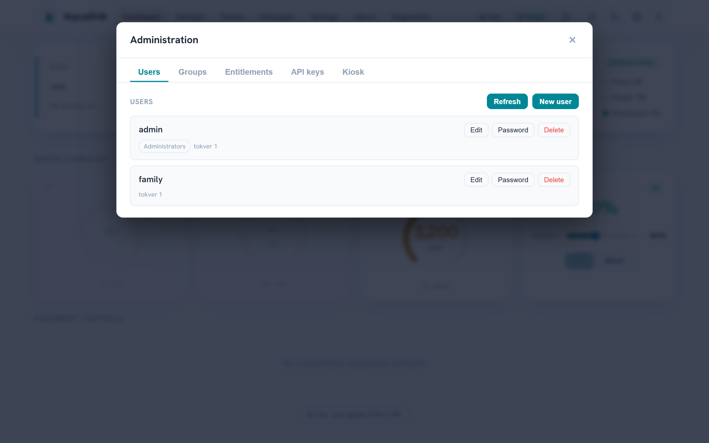
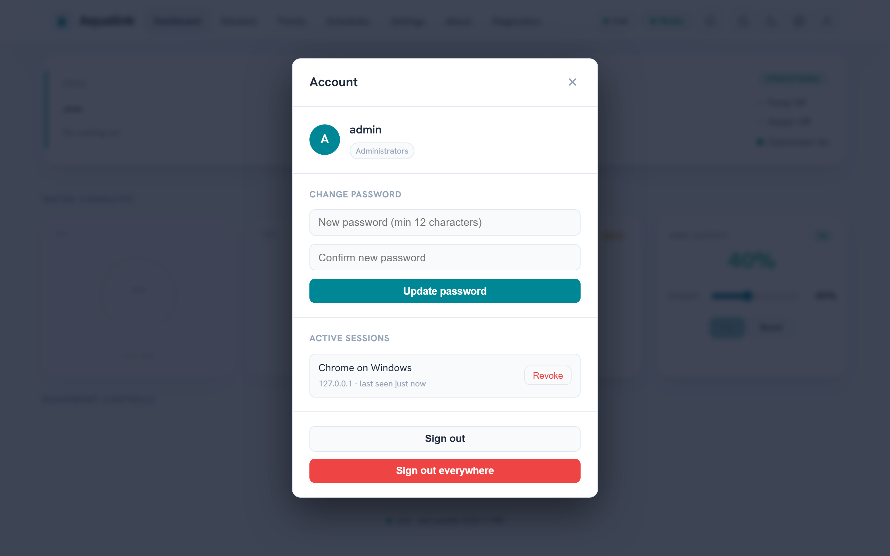

Security policy¶
For anyone deploying or evaluating Aqualink Automate. This page covers which versions get security fixes, how to report a vulnerability privately, and the deployment defaults you should know before exposing the app on a network.
Supported versions¶
Only pre-release (beta) builds exist so far — currently v0.9.0-beta.5. There is no stable (non-beta) release line yet, so security fixes are not back-ported to earlier betas; they land in development. Run a recent build from the develop or main branch.
A supported-versions table will be added here at the first stable (non-beta) release.
| Version | Supported |
|---|---|
| (none yet) | A table will appear here at the first stable (non-beta) release. |
Reporting a vulnerability¶
Report security vulnerabilities privately. Do not open a public GitHub issue, pull request, or discussion for a security problem — a public report exposes the flaw to everyone before a fix exists.
Use one of these private channels instead:
- GitHub private vulnerability reporting (preferred). Open the repository's Security tab and choose Report a vulnerability. This creates a private GitHub Security Advisory visible only to you and the maintainers. If you do not see the option, private reporting may not be enabled yet — use the contact method below.
- Direct contact. Email the maintainer listed on the GitHub profile of the repository owner. Keep the report private; do not CC public lists.
Important: If you are unsure whether something is a security issue, treat it as one and use a private channel. You can always move a non-issue to a public non-security issue later, but you cannot un-publish a leaked vulnerability.
Expect an acknowledgement and triage through the private advisory. Fixes are incorporated into development, and the advisory is published once a fix is available.
What to include in a report¶
A good report lets the maintainers reproduce and assess the issue quickly. Include:
- Affected component — for example the HTTP API, the WebSocket layer, MQTT publishing, or the RS-485 serial protocol parser.
- Version or commit — the branch and commit SHA you are running (
git rev-parse HEAD). - How it was deployed — the relevant CLI flags or config-file keys, especially the bind address (
--address), whether API auth (--api-auth-token) is enabled, and whether MQTT TLS (--mqtt-tls) is in use. - Reproduction steps — a minimal sequence, request, or input that triggers the problem.
- Impact — what an attacker can read, change, or disrupt.
- Suggested remediation — if you have one.
Do not include live credentials or private certificate keys in the report. Redact tokens and passwords.
Deployment security defaults¶
Aqualink Automate ships with conservative defaults, but you should understand them before exposing the app beyond your own machine. Config-file keys are the option long name without the leading dashes (for example --api-auth-token becomes api-auth-token). The full option reference lives in Configuration reference; the request-auth model is described in detail in Usage and API.
| Default | Behavior | How to harden |
|---|---|---|
Bind address 127.0.0.1 |
The web server listens on localhost only; it is not reachable from the network. | Only change this when you intend remote access. Set --address 0.0.0.0 (or a specific interface) to expose it, and pair that with auth and TLS. |
| API auth off | The HTTP API, metrics, and WebSocket are open — no credential is required. | Enable the identity system with --auth-mode enabled (first-run wizard creates the administrator; users, groups, API keys, and guest/kiosk scope are managed in-app — see below). The legacy shared bearer token (--api-auth-token <token>) remains available for simple deployments. |
| MQTT credentials in cleartext | Without --mqtt-tls, the MQTT username and password are sent unencrypted; the app logs a warning at startup. |
Enable --mqtt-tls. The startup warning reads: MQTT credentials configured without TLS - password will be sent in cleartext; enable --mqtt-tls. |
--mqtt-tls-skip-verify available |
When set, TLS certificate verification is skipped for the MQTT connection. | Security: Leave this off in production. It defeats the protection TLS provides against a man-in-the-middle. Use it only for local testing against a self-signed broker. |
| HTTPS certificate generated per install | If no certificate is configured, the app generates a unique self-signed cert + private key on first boot (the key is written 0600, the directory holding it is restricted to owner-only 0700, and its SHA-256 fingerprint logged). When the install tree is read-only (the common packaged case) the material falls back to a per-user private directory — $STATE_DIRECTORY (the systemd StateDirectory, i.e. /var/lib/aqualink-automate), else $XDG_RUNTIME_DIR, else $HOME/.local/state on Linux; %LOCALAPPDATA% on Windows — never the world-writable system temp directory. The fallback directory is created owner-only and verified to be a self-owned, non-symlink directory before the key is written or an existing pair is reused, so another local user can neither read the key nor pre-seed material. No private key is shipped in the package or committed to the repo. |
Supply your own trusted certificate with --cert / --cert-key (both required together), ideally from a CA your clients trust, at a persistent writable path. |
Security: If you set --address 0.0.0.0 to allow remote access, enable authentication (--auth-mode enabled, or the legacy --api-auth-token) and serve over HTTPS. Binding to all interfaces with auth off exposes pool control to anyone on the network. When the app binds a non-loopback address with no --api-auth-token, it logs a prominent startup warning; pass --insecure-no-auth to acknowledge an intentionally open deployment (e.g. behind a trusted reverse proxy) and downgrade that warning. Prefer delivering secrets (--api-auth-token, --mqtt-password) via the config file (readable only by the service user) or the environment rather than the command line, where they are visible in the process table (/proc/<pid>/cmdline, ps) and shell history.
How auth enforcement behaves¶
When you set --api-auth-token, the server requires Authorization: Bearer <token> on every API request, the /metrics endpoint, and the WebSocket upgrade. A missing or mismatched token is rejected with HTTP 401; a request that fails the Origin allow-list is rejected with HTTP 403.
Key points:
- Static assets stay open so the login screen can load before the user supplies a token. Only
/api,/metrics, and the WebSocket upgrade are gated. - WebSocket upgrades cannot carry an
Authorizationheader from a browser, so the token may instead be supplied as abearer.<token>entry in theSec-WebSocket-Protocolheader. - Origin allow-list and CSRF header are built into the routing layer and can be enabled:
--api-allowed-origin <origin>(repeatable) — when set, an API request or WebSocket upgrade whoseOriginheader is not on the list is rejected with HTTP 403. This blocks cross-site WebSocket hijacking and cross-origin reads. Leave unset to disable the check.--api-require-csrf-header— when set, state-changing requests (POST/PUT/PATCH/DELETE) must carry anX-Requested-Withheader, mitigating cross-site request forgery from a browser. Defaults to off so existing programmatic clients are unaffected.- Token strength / brute force. The token is compared in constant time, and the routing layer applies per-IP rate limiting: after 10 failed authentication attempts from a source IP within 60 seconds, that IP is refused with HTTP 429 for the rest of the window (a successful auth clears it). This blunts online guessing, but still use a long random token (32+ characters); the app warns at startup if the configured token is shorter than 16 characters.
To require TLS for the API itself and pick certificates, see the --cert, --cert-key, and related flags in the Configuration reference.
Identity system (--auth-mode)¶
The shared-token gate above is superseded by a full identity system (design: auth-redesign.md). The identity system is fully operational as a production login flow: the substrate (subject resolution, the entitlement vocabulary and default-deny policy engine, JWT signing-key management, the GET /api/auth/me probe, and the audit channel — Slice 1), local accounts with sessions, an in-app administration surface (users, groups, entitlements, API keys), and headless bootstrap (Slice 2), and anonymous Guest scope with kiosk PIN elevation (Slice 3). In-app OIDC and reverse-proxy forward-auth are designed but not yet implemented — see auth-redesign.md.
With --auth-mode enabled and an empty user store, the web UI walks you through creating the first administrator:

Afterwards, visitors sign in from the login card (or browse anonymously under whatever entitlements the built-in Guest group grants):

Postures (--auth-mode, default disabled; see the Configuration reference):
disabled(default) — no identity resolution; every policy decision is Permit. Behaviour is exactly the historical model described above, including the optional shared bearer token (--api-auth-token).enabled— every request is resolved to a subject (from a Bearer JWT, or anonymous) and each route's declared entitlement is checked by the policy engine (ABAC, default deny). An anonymous request resolves to the built-in Guest group, which starts with no entitlements — deny-by-default until an administrator grants guest scope (edit the Guest group in the Administration UI or viaPOST /api/groups). The legacy--api-auth-tokenshared-token check is then superseded: bearer credentials are interpreted by the subject resolver (as a JWT) rather than compared against the shared token; a configured legacy token folds in as a pre-seeded bootstrap API key (see Slice 2 below). The Origin allow-list and CSRF-header checks continue to apply unchanged.
Enforcement semantics with --auth-mode enabled:
- A denied request answers
401 Unauthorizedwhen the subject is anonymous (logging in could elevate it) and403 Forbiddenwhen the subject is authenticated but not entitled. - The non-enumeration rule is retained: an unauthenticated probe of an unknown
/api/*path answers401(not404), so the route surface cannot be mapped without credentials. GET /api/auth/medeliberately declares no entitlement requirement, so an anonymous/guest caller can always ask "who am I and what may I do?" — see Usage and API.
Supporting infrastructure shipped with Slice 1:
- Trusted-proxy client identity.
X-Forwarded-Foris honoured only when the connecting peer is inside a configured trusted-proxy CIDR (SecurityConfig::TrustedProxyCidrsin the routing layer); from any other source the header is ignored, so an untrusted client can neither spoof its way out of a rate-limit bucket nor put someone else into one. The CLI flag to configure the trusted CIDRs arrives with the forwarded-auth (proxy) slice; until then the list is empty andX-Forwarded-Foris always ignored. - JWT signing keys. Session tokens are signed with keys held in
jwt-signing.keyinside the auth state directory —--auth-state-dir, or by default anauth/subdirectory of the platform's secure state directory (the same owner-only0700fallback chain as the generated TLS key). The key file itself is written0600. Each key carries akidstamped into the token header; rotation installs a fresh active key while keeping the previous one valid, so tokens issued just before a rotation still verify during their lifetime. -
Audit trail. The security audit trail is a separate subsystem, not an operational log channel (there is no
--loglevel-audit), so audit events never mix into — or leak onto — the general logs. It reaches two destinations: (1) an OS-native, forward-capable sink — syslog with theLOG_AUTHPRIVfacility on POSIX (so distros route it to a restricted-mode auth log, and rsyslog/journald can forward it off-box by facility), or a dedicated Windows Event Log source — which is the authoritative copy, because integrity comes from off-box forwarding the app cannot rescind; and (2) a structured JSONL file in the state directory (owner-only, size-rotated) that feeds the future in-app audit viewer and is the local convenience/fallback when no forwarder is configured — explicitly not the integrity anchor, since the app's own uid can rewrite it. Denials are recorded at a higher syslog priority (warning) than permits (notice). On Windows the true Security event log requires LSA registration and is out of reach for an ordinary service, so a dedicated Application-log source is used instead — separation and queryability, but not the privileged Security log. Auditable events flow whenever--auth-modeis enabled: control actions with their policy decision, login success/failure, lockouts, token/key issuance and revocation, and entitlement/group changes. See Logging sinks for the full design. -
Least-privilege service account (Windows). When installed as a service (
--install-service), the app runs as the built-inNT AUTHORITY\LocalServiceaccount — the Windows analogue of the dedicated unprivilegedaqualinkuser the Linux packaging creates (adialout-group member under a hardened systemd unit). LocalService has minimal local rights and presents anonymous credentials on the network. It reads its config from the machine-wide%ProgramData%\Aqualink Automate\directory, and its secure state (TLS key, auth state) falls back to a per-account private directory as described in the certificate row above. Tightening the RS-485 COM-port and state-directory ACLs specifically for the service SID is follow-on hardening; if LocalService cannot open the serial device on a given host, install under a more privileged account as a stopgap.
Sessions and local accounts (Slice 2)¶
Slice 2 adds the local-account login flow and the admin management surface on top of the Slice 1 substrate. With --auth-mode enabled, POST /api/auth/login verifies a username/password and issues a session; the endpoints and their entitlement gates are catalogued in Usage and API. An administrator manages users, groups, entitlements, API keys, and the kiosk PIN from the in-app Administration overlay:

- Session model. A successful login returns a short-lived access JWT (default 15 minutes,
--jwt-access-ttl) carrying the subject's resolved entitlements, plus a longer-lived opaque refresh token. The access token is presented asAuthorization: Bearer <jwt>on every request; the refresh token is exchanged atPOST /api/auth/refreshfor a fresh pair. Refresh tokens are single-use and rotate on every exchange — each rotation mints a new secret and remembers the previous one. Presenting a rotated-out (already-used) refresh token is the classic stolen-token signature, so it revokes the whole session and is recorded loudly on the audit trail. Only the SHA-256 digest of each refresh secret is stored; the secret itself is returned once. - Immediate revocation via token version. Each account carries a
tokvercounter. Password change, disable, and logout-everywhere (POST /api/auth/logoutwitheverywhere) all bumptokver, which instantly invalidates every outstanding access token for that user (the subject resolver cross-checkstokveron each request) as well as revoking the refresh sessions. The revocation also propagates to live WebSocket connections, which are closed on their next poll so the client must reconnect with fresh credentials. Entitlement/group changes bumptokvertoo, so access tokens go stale within one request while still-valid refresh tokens re-mint with the new grants — a grant change never forces a re-login. - Password hashing off the kernel thread. Passwords are hashed with argon2id (libsodium
crypto_pwhash_str). argon2id is deliberately slow, and the app's cooperative single-threaded loop also drives the RS-485 bus, so every hash/verify runs on a worker offload pool and never blocks the protocol loop. Unknown usernames are verified against a pre-computed decoy hash so login timing does not reveal whether an account exists. - Login lockout. In addition to the per-IP rate limiter in the routing layer, failed logins are counted per account: 5 failures against one username lock that account's login for 15 minutes (
429,Retry-After: 900), independent of the source IP. This survives an attacker rotating IPs behind a proxy. - Password policy. The single rule enforced everywhere a password is set (setup, admin create, password change) is a minimum length of 12 characters; there are no composition rules (length beats complexity).
- First-run setup and headless bootstrap. When
--auth-mode enabledand the user store is empty, the system has no owner. Either the first-run setup screen posts toPOST /api/auth/setupto create the first administrator, or--bootstrap-admin <username>does so headlessly at startup. Both funnel through one idempotent path: once any user exists, setup is sealed —/api/auth/setupanswers403and a stray--bootstrap-adminflag is a no-op, so an extra admin can never be minted after ownership is established. The bootstrap password is read from the first line of--bootstrap-admin-password-fileor theAQUALINK_BOOTSTRAP_ADMIN_PASSWORDenvironment variable — never a bare command-line argument, which would be visible in the process table. - API keys. Machine credentials for the HTTP API are created by an administrator, entitlement-scoped, optionally expiring, and shown exactly once at creation (
aak_...); only their SHA-256 digest is stored, so a lost secret cannot be recovered — only revoked. The legacy--api-auth-token, when configured under--auth-mode enabled, is folded in as a pre-seeded bootstrap key withsystem.adminscope, so existing deployments keep working with their configured secret. - Secrets at rest. JWT signing keys, the user/group/API-key/session stores, and per-user preference overrides all live as owner-only files in the auth state directory (
--auth-state-dir, or the platform's secure0700state directory by default); the signing key file is written0600.
Signed-in users manage their own credential from the Account menu — password change, the active-session list with per-device revocation, and sign-out-everywhere:

Guest scope and kiosk PIN (Slice 3)¶
Slice 3 covers anonymous visitors and shared terminals:
- Guest scope. An anonymous request resolves to the built-in Guest group, which starts with no entitlements (a login wall). Granting Guest
equipment.viewlets anonymous visitors browse the dashboard read-only, with login-to-elevate still available; the group is edited like any other from the Administration overlay orPOST /api/groups. The Guest group cannot be deleted. - Kiosk PIN elevation. For a poolside tablet or wall panel, an administrator can configure a short numeric PIN (
PUT /api/kiosk, min 4 digits, argon2id-hashed off-thread) that elevates the terminal into an admin-chosen target group without exposing a real account's password. Kiosk sessions are ordinary revocable JWT sessions but carry no per-user preferences; disabling the kiosk or replacing the PIN immediately drops outstanding kiosk sessions back to the Guest scope. Wrong-PIN attempts share the account-lockout treatment (429withRetry-After).
The route-level detail (including GET /api/auth/me's kiosk_enabled flag the login screen keys off) is in Usage and API.
Container hardening (AppArmor)¶
The container talks to hardware (an RS-485 serial device), binds an HTTP port, and — in
its default form — starts as root to drop privileges. A tailored AppArmor profile
confines that surface to only what it needs (serial devices, /data, TCP for the HTTP
server / MQTT client / remote serial, and the exec chain), so a compromise cannot roam
the host. The canonical profile lives with the Home Assistant add-on at
aqualink-automate/apparmor.txt.draft.
- Home Assistant add-on. The Supervisor auto-loads and enforces a file named
exactly
apparmor.txtin the add-on folder. The profile currently ships asapparmor.txt.draft(inert) so it can be validated on a real Home Assistant OS install before it is enforced — enabling an untested profile in enforce mode would make the add-on fail in ways indistinguishable from other first-run issues. Activation steps (rename, regenerate the edge channel, then tune againstdmesg | grep DENIED) are in the file's header. - Standalone Docker image. Docker applies its built-in
docker-defaultprofile automatically; the tailored profile above is opt-in. Load it into the host kernel and select it per container:
sudo apparmor_parser -r -W aqualink-automate/apparmor.txt.draft
docker run --security-opt apparmor=aqualink_automate ... ghcr.io/iainchesworth/aqualink-automate
There is no auto-load hook in plain Docker, so this stays opt-in rather than a default
that would break docker compose up on hosts without the profile loaded.
Verifying build authenticity¶
Every released binary and container image can be traced back to the exact source commit and workflow run that produced it, so you can confirm a download came from this project's pipeline rather than a tampered or "poisoned" build. Two independent, complementary checks are provided.
Build provenance (keyless, always present)¶
Each release package and the Docker image is published with a GitHub build-provenance attestation — a SLSA provenance statement signed through Sigstore using the release workflow's short-lived OIDC identity. There is no long-lived signing key to steal, and the attestation records the repository, commit, and workflow that built the artifact.
Verify with the GitHub CLI (gh):
# A downloaded package
gh attestation verify aqualink-automate_<version>_amd64.deb \
--repo iainchesworth/aqualink-automate
# The container image (tag or digest)
gh attestation verify oci://ghcr.io/iainchesworth/aqualink-automate:<version> \
--repo iainchesworth/aqualink-automate
A successful check prints the source repository, commit SHA, and the workflow that produced the artifact. Reject any download that fails to verify.
GPG signature (maintainer identity)¶
When the project signing key is configured, each release also ships a detached
GPG signature (<file>.asc), a signed checksum manifest (SHA512SUMS +
SHA512SUMS.asc), and the public key (aqualink-automate-signing-key.asc) — the
same key that signs the APT/DNF repositories.
gpg --import aqualink-automate-signing-key.asc
gpg --verify SHA512SUMS.asc SHA512SUMS && sha512sum -c SHA512SUMS
This binds the artifacts to the maintainer's key; provenance binds them to the build. Verifying both gives the strongest assurance. A Software Bill of Materials (SPDX SBOM) is also attested for the release artifacts and the image (attested alongside the provenance, and pushed to GHCR for the image).
Policy adoption¶
This security policy is adapted from common open-source practice. Aqualink Automate is licensed under the GNU General Public License v3 (see LICENSE.txt).
Suggestions to improve this policy are welcome — raise them as a non-security issue or pull request through CONTRIBUTING.md. Keep actual vulnerability reports on the private channels described above.